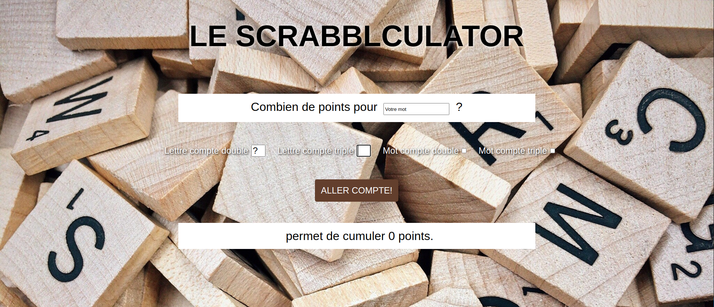

Présentation
Je suis une jeune développeuse en formation, installée en région parisienne.
Sérieuse, concentrée et efficace, j'ai toutefois le GIF facile et tente d'égayer la journée de mon équipe dès que l'occasion de présente.
Intéressée par le scepticisme, je m'ouvre à la remise en question et je tente d'adopter un regard critique aussi souvent que possible.
J'ai pu tester les bancs de la fac en suivant des cours de biologie & biochimie captivants. Cependant les débouchés de ce cursus ne me convenant pas, j'ai décidé de me lancer dans un métier-passion : la pâtisserie.
Je me suis donc formée techniquement pendant 4 ans dans des maisons renommées en multipliant les cordes à mon arc : pâtisserie, chocolaterie, confiserie et glacerie puis cuisine et traiteur. Mes convictions personnelles se construisant en parallèle, j'ai peu à peu cherché à mettre mes compétences au profit d'entreprises et associations engagées socialement et écologiquement. J'ai pu alors m'initier à la gestion de projets et renforcer mes facultés d'organisation, d'adaptabilité et de transmission de connaissances.
Mon envie grandissante de nouveaux challenges techniques m'a progressivement menée à considérer une reconversion, c'est pourquoi je me forme aujourd'hui au développement web.
Actuellement en formation développeur web chez O'clock, j'apprends à coder dans un cadre dynamique, stimulant et bienveillant.
J'y acquiers les savoirs, savoirs-faire et savoirs-être adéquats pendant 6 mois, grâce à un socle de compétences globales enrichi d'une spécialisation en Symfony ou React. L'ensemble sera exploité et renforcé par l'élaboration d'un projet final en autonomie et en conditions réelles.
Tous mes softs skills issus de 10 ans d'expérience professionnelle et mes compétences techniques nouvellement maîtrisées pourront ensuite être facilement ajustés et intégrés à une équipe!
Parcours
Mon parcours complet est disponible sur mon profil LinkedIn.
En voici une synthèse:
-
2021 : Formation développeur web, école O'clock
- Acquisition de savoirs et savoirs-faire (Git, HTML/CSS, PHP, JavaScript)
- Développement de savoirs-être
-
2020-21 : Responsable adjointe, Altermarché (94)
- Participation à l'ouverture et au développement, mise en place de l'offre
- Encadrement d'équipe
- Contact client
-
2019-20 : Cheffe de projet Cantine & traiteur écoresponsables, Association La Cour Cyclette (94)
- Développement de l'offre de restauration éco responsable ( validation du Titre Professionnel "Entrepreneur de Petite Entreprise")
- Développement de projets autour de l'alimentation positive (gourmande, saine et responsable)
-
2018-19 : Pâtissière indépendante (Ile-de-France)
- Organisation de mon temps de travail
- Définition des besoins clients et de cahiers des charges
-
2017 : Pâtissière expatriée (Québec)
- Confrontation à une autre culture professionnelle
- Amélioration de mon niveau d'anglais (travail quotidien avec des anglophones)
- Amélioration de mon accent québecois
2012-16 : Apprentissage (Ile-de-France)
- Acquisition de compétences techniques
- Amélioration de mon organisation de travail, de mon aptitude au travail d'équipe et de mon adaptabilité à différents fonctionnements
Réalisations
-
Le Bellemartisseur (HTML/CSS, PHP)

-
Le Scrabblculator (HTML/CSS, PHP, JavaScript)

{kind=link}